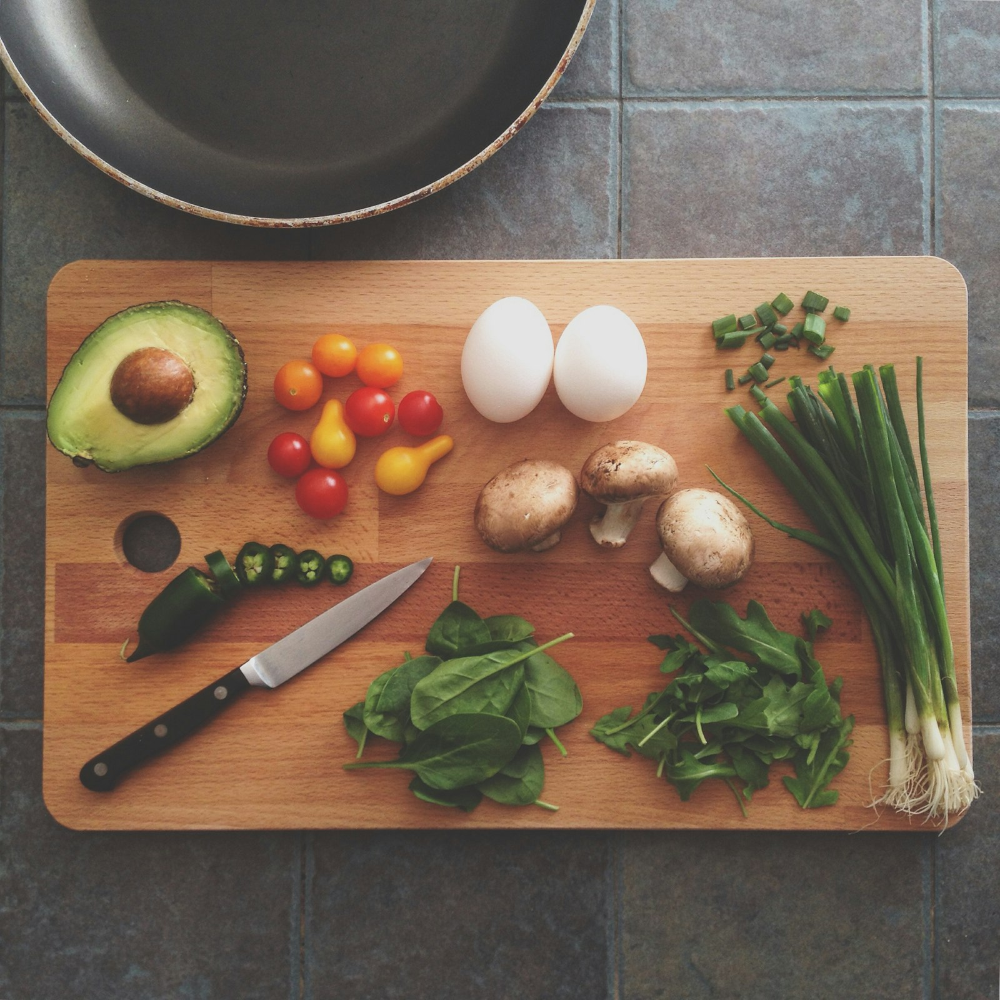
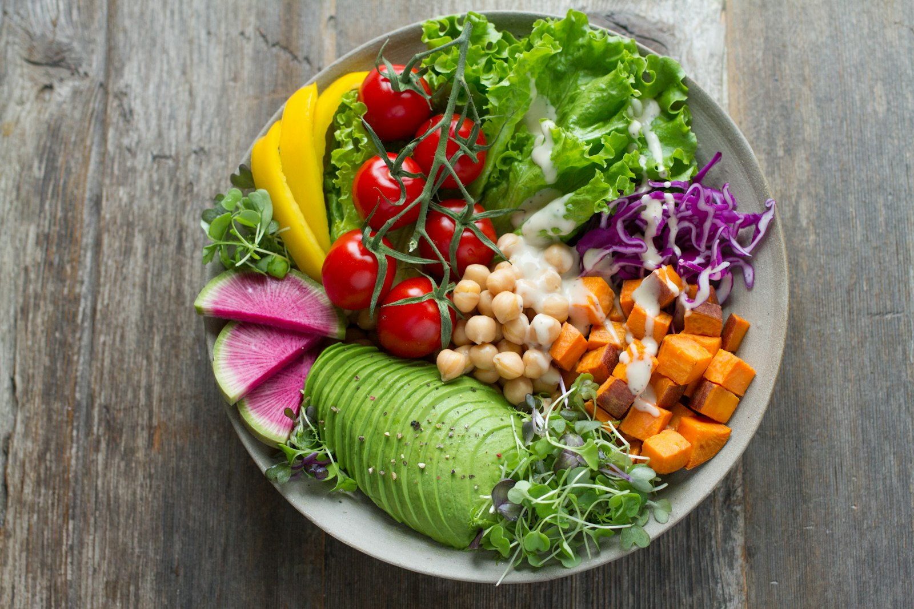

Good food, made together
Cooking classes, shared tables, and a kitchen open to our community.



Cooking classes
See all current class offerings and get tickets here.
Buy tickets4-H Cooking Classes
[description to be added]
[link to be added]Cooking Demos
[description to be added]
[link to be added]